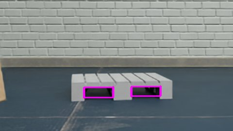
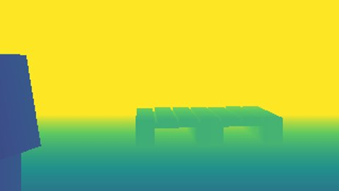
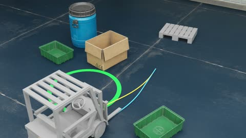
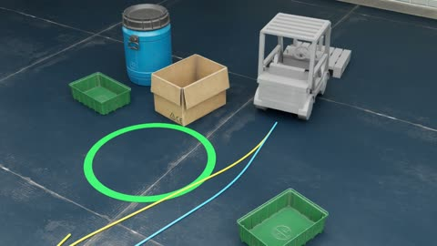
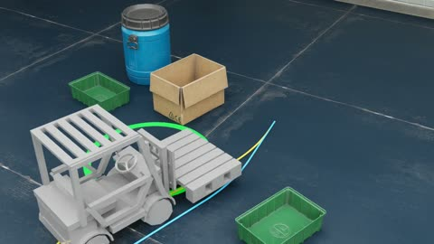
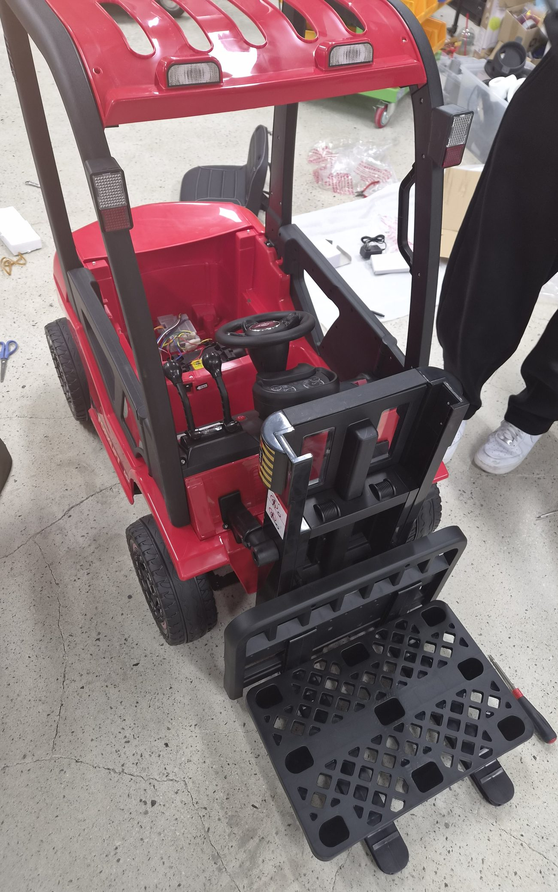
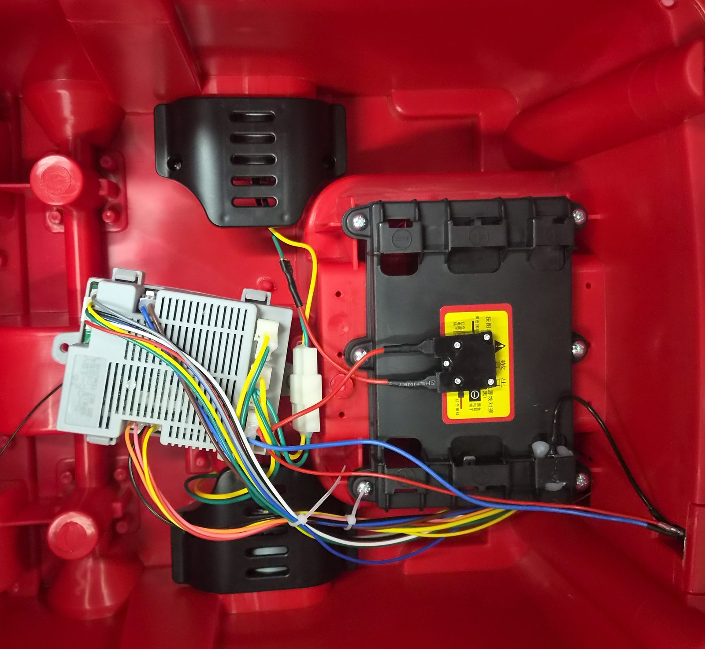

① 팔레트 인식

깊이 영상에서
팔레트·포켓 검출
구현

깊이 영상에서
팔레트·포켓 검출
구현

포켓 위치·방향을
로봇 기준으로 표시
구현

장애물을 피하며
팔레트에 접근
시뮬레이션 연결

포크를 넣고
들어 올림
시뮬레이션 연결

목적지까지
운반·하역
시뮬레이션 연결


| 제어기 | J6 D-CC-12V 표기 · 좌석 아래 |
| 배터리 | 12V 표기 |
| 조종기 | 전진·후진 · 상승·하강 · 좌·우회전 · 속도 조절 · 제동 |
| 이름 | 장착 | 특징 | |
|---|---|---|---|
| ① | ifm PDS | 바닥 위 23~36 cm 정면 수직 | 팔레트 인식 전용 3D 카메라 |
| ② | Crown 특허 | 포크 캐리지 | 포크와 함께 승강 포크 끝이 화면 아래쪽 |
| ③ | Toyota·AIST | 백레스트 | 어안 카메라 포크와 함께 이동 |
| ④ | ADAPT | 카메라와 근거리 센서 분리 | 마지막 접근은 근거리 센서 |
| 오차 항목 | 크기 | 원인 |
|---|---|---|
| 카메라가 잰 팔레트 위치 | 1.3 mm | 깊이 영상의 점 간격 단위로 포켓 가장자리를 찾으며 생긴 차이 |
| 차가 멈춘 자리 | 0.8 mm | 계획한 경로를 따라가다 멈춘 자리가 옆으로 조금 벗어남 |
| 차가 비스듬히 선 각도 | 3.6 mm | 차가 0.16° 비스듬히 멈춰, 1.3 m 앞 포크 끝에서는 옆으로 3.6 mm가 됨 |
| 덜 들어간 깊이 | 7.5 mm | 목표까지 8 mm 안에 들면 도착으로 보도록 설정해 두어, 감속하다 그 안에서 멈춤 |
| 입력 | 출처 |
|---|---|
| 팔레트 위치 | 카메라 추정 |
| 로봇 위치 | 시뮬레이터 |
| 장애물 | 시뮬레이터 |
| 목적지 | 시뮬레이터 |
치수·무게·축간 거리
포크 치수·승강 범위
최소 회전 반경
배선·제어기 신호 형식
모터 정격·구동 방식
속도·조향각·포크 높이 신호
컴퓨터 명령 입력 경로
주행·조향·승강 상태 피드백
전원·배선 정리
RGB-D 카메라 장착점·브래킷
2D LiDAR 장착 위치·높이
센서 좌표 변환 보정